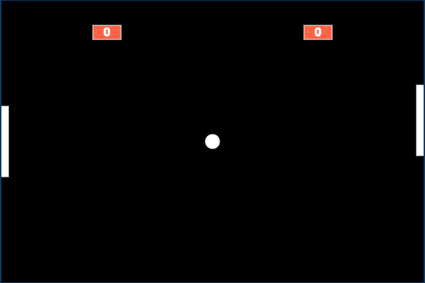

Desculpe, jogo Pong apenas disponível no PC!
Para mover a sua raquete para cima utilize as teclas W ou D e para mover para baixo utilize as teclas S ou A.
Para pausar a bolinha utilize a tecla P e para retomar o movimento da bolinha utilize a tecla C.
Para mutar os sons do jogo utilize a tecla M e para reativar os sons do jogo aperte N.
Para destravar a bolinha e zerar os pontos aperte BARRA DE ESPAÇO.
 LinkedIn
LinkedIn GitHub
GitHub